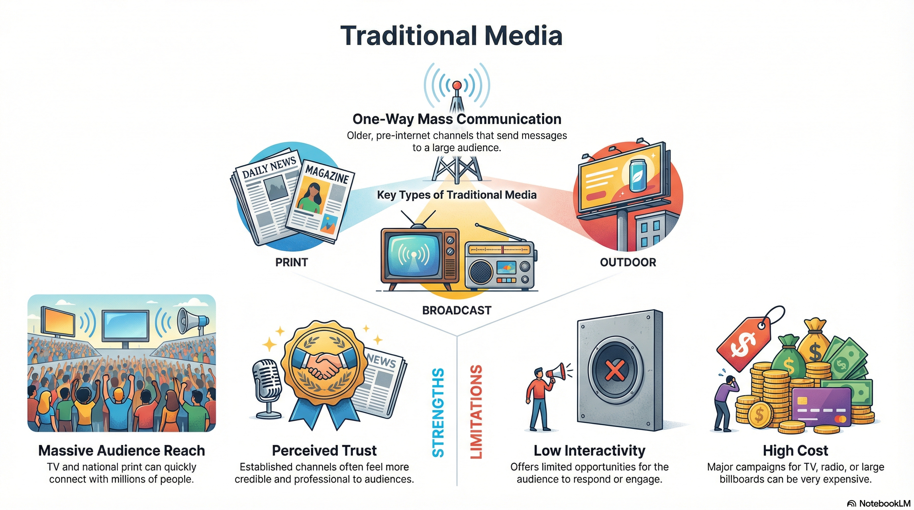

Traditional media includes print, radio and broadcast TV. It still reaches huge audiences
and feels professional and trustworthy, even in a world full of apps and social media.
What is Traditional Media?
Traditional media refers to older, established forms of mass communication such as
newspapers, magazines, radio, posters, billboards and broadcast television. These channels
existed long before the internet and social media.
Messages are usually one-way: the audience receives information but
cannot easily respond or interact. Traditional media is often controlled by large
organisations, which can make it feel more credible and trustworthy.
Key points you must remember
Traditional media includes print, outdoor adverts, radio and broadcast TV.
It is usually one-way communication with limited interactivity.
It can reach very large audiences but is often expensive.
It is often combined with new media in modern campaigns.

Traditional Media at a Glance
Use this infographic to remember the main types of traditional media and how they are used
in campaigns today.
Types of Traditional Media
Channels that existed before the internet and social media.
Use these games to test your knowledge of traditional vs new media, platforms and
how products are delivered to audiences.
All topics
iMedia Genius
Mixed questions on the whole R093 spec, including traditional and new media,
job roles, planning and legal issues.
Exam-styleWhole spec
Media industry
Sector Sorter
Sort products into traditional vs new media sectors and link them to examples
like TV, radio, magazines and websites.
MCQsSectors
Distribution
Distribution Dash
Match campaigns to the best mix of traditional and digital platforms to reach
specific audiences.
MCQsPlatforms
Exam Practice – Traditional Media (AI Marker)
Write your answers in the boxes below, then click Build & Copy AI Marking Prompt.
Choose an AI tool and paste the prompt to get examiner-style marking and feedback.
Q1. Define “traditional media”. (1 mark)
Technique: One clear sentence.
Q2. State one traditional media format that could be used to promote a new theatre show. (1 mark)
Technique: Just name one valid format.
Q3. Explain one advantage of using a TV advert instead of a social media advert to promote a charity appeal. (2 marks)
Technique: Make one point and develop it with “because / so”.
Q4. Describe two limitations of using posters instead of online adverts to target teenagers. (4 marks)
Technique: Two separate limitations. For each: problem + impact.
Q5. A company is launching a new sports drink. Discuss the advantages and disadvantages of using both traditional media and new media to promote the product. (9 marks)